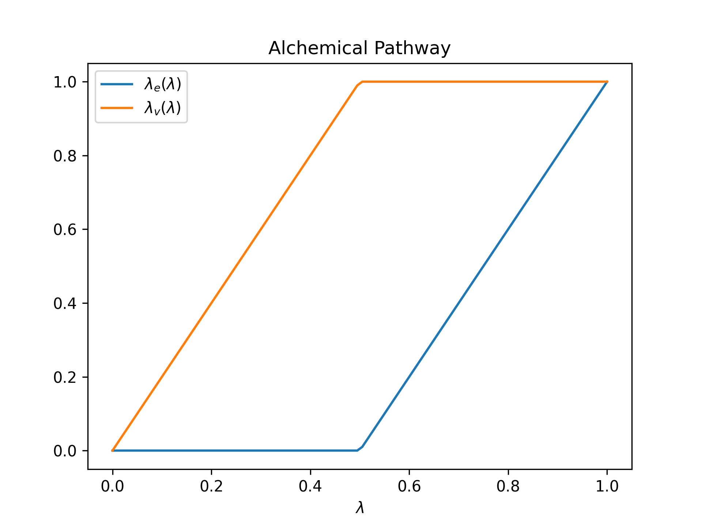

|
Tinker-HP v1.3
|
|
Tinker-HP v1.3
|

Lambda-ABF is an alchemical free-energy method, based on lambda-dynamics, that consists in the following attributes:
The main benefits of this method lie in its user-friendliness and sampling efficiency. The user protocol for obtaining free-energy estimates is straightforward. The method is supported by the open-source Colvars library, where the alchemical parameter is implemented as new extended variable. This enables the practical manipulation of this coordinate with all the pre-existing functionalities of Colvars, including seamless biasing of this and other coordinates. For Absolute Free Energies of Binding, it can be distance to bound configuration (DBC) collective variable, which facilitates the definition of the bound state and its sampling. [1,2]
In order to run Lambda-ABF simulations with Tinker-HP, the user has to add the following lines to its Keyfile (***.key** extension): lambdadyn run a lambda-dynamics simulation ligand -1 5 define the list of atoms whose interactions with the environment will be scaled (typically a ligand). Here it will concern the atoms of index (in the ***.xyz** file) 1 to 5 ligand 1 2 3 4 5 same thing but with explicit list of atoms
If one wants to start a simulation from a predefined $$ value x, one can add: lambda x
By default, Tinker-HP uses van der Waals decoupling (without modifying the intramolecular vdw interactions). To resort to van der Waals annihilation (where intramolecular interactions are also scaled down), as done in the Lambda-ABF paper, the following line has to be added to the keyfile. vdw-annihilate
**_Lambda-Path_**: The code offers the possibility to scale down the interactions between the "ligand" and the rest of the system by distinguishing between van der Waals and electrostatics (and polarization) interactions. It is done by introducing specific $$ parameters for each: $$ for van der Waals and $$ for electrostatics. Each of take their value between 0 and 1 and are functions of the "global" $$ parameters following the definition illustrated below.

The value (of $$) at which $$ reaches 1 can be modified by adding the following to the keyfile (here with value 0.5): bound-vdw-lambda 0.5 The value (of $$) at which $$ reaches 0 can be modified by adding the following to the keyfile (here with value 0.5: bound-ele-lambda 0.5 0.5 is the default value for both these parameters.
For lambda-ABF simulations, the user needs to have Colvars linked with Tinker-HP (see Installation), and thus a ***.colvars** file with the same prefix as the one used for the simulation. The $$ alchemical variable is then defined as an extended variable by putting the following lines in the ***.colvars** file:
``` colvar { name l extendedLagrangian on extendedLangevinDamping 1000 extendedtemp 300 extendedmass 150000 lowerBoundary 0.0 upperBoundary 0.5 #lowerBoundary 0.5 #upperBoundary 1.0 reflectingLowerBoundary reflectingUpperBoundary width 0.01 alchLambda { } outputTotalForce outputAppliedforce } ``` Here, the alchemical variable is named l and takes values between 0.0 and 0.5 which would be the van der Waals leg given the default lambda-path (see previous section). Taking values between 0.5 and 1.0 (two commented lines) would then yield the electrostatics leg in the same setup. The damping and the mass sould not be changed (they have been found to give accurate results for a wide range of systems), as well as the width.
The temperature should be the target one in Kelvin (here 300K).
As an extended collective variable, $$ (named l in the previous Colvars input) can be used as such in combination with all the features from Colvars (adaptive and fixed bias, combination with other CVs...)[3] The time-evolution of $$ will be printed in the ***.colvars.traj** file.
To run Lambda-ABF simulation, one then simply need to add:
``` abf { colvars l fullSamples 5000 } ``` To run Multiple-Walker, this becomes:
``` abf { colvars l fullSamples 5000 shared sharedfreq 1000 } ``` To run Multiple-Walker (here with 4 walkers), one needs to add the following line to the keyfile: replicas 4 As with any ABF simulation using Colvars, the estimated PMF as a function of $$ can be found in the ***.pmf** file that is regularly outputted by Colvars. For Multiple-Walker, it can be found in the ***.all.pmf** file.
As a collective variable handled by Colvars, the alchemical variable and any (fixed or adaptive) biased simulation involving it can be restarted using a standard ***.state** files regularly outputed by Colvars. (If a state file exists with a $$ value, it will have the priority over any $$ value defined in the key file.)
Note that the restarted $$ must be in accordance with the configuration, taken from a ***dyn** Tinker-HP restart file (when present) or ***xyz** file, and that for this reason care must be taken when choosing the frequency of restart output for Tinker-HP (in the command line) and in Colvars (colvarsRestartFrequency parameter)
Remark for Multiple-Walker simulations: when restarting Multiple-Walker simulations of a "system" with for example 3 walkers you may have both a global restart: system.dyn and restarts specific to the walkers: system_reps000.dyn, system_reps001.dyn, system_reps002.dyn. The global one always has the priority over the others and if it exists all the walkers will start from it, so make sure to remove it if you want to use the other ones.
For Absolute Free Energies of Binding, one needs to add restraints on the disappearing ligand in order to define a binding mode and to make the simulation converge in the weakly coupled regime. Colvars can be used to define all the existing schemes (such as "Boresch" restraints), and also DBC (Distance to Bound Configuration) as done in the Lambda-ABF paper. A DBC collective variable is the RMSD of (a subset of atoms of) the ligand in the moving frame of the binding site. A nice feature of DBC is that can be defined easily by monitoring a regular MD of the complex with the Colvars Dashboard[4], and that its free energy contribution can be computed numerically in the gas phase as is done in the SAFEP approach[5].
The definition of a DBC variable within Colvars typically looks like this (to be added to the Colvars input):
``` colvar { name DBC
rmsd {
refPositionsFile alchemy_site.pdb
atoms { atomNumbers 1 3 5 7 9 11 12
centerReference yes rotateReference yes fittingGroup { atomNumbers 1207 1315 1370 1386 1556 1566 1599 1616 1730 1827 }
refPositionsFile alchemy_site.pdb } } } ```
All the inputs necessary to run the solvent phase (decoupling in bulk water) of a water molecule (with the AMOEBA polarizable force field and with the TIP3P rigid water model), as well as the decoupling of small guest molecule from a host can be found in the following archive:
For any bug report, technical question or feature request, contact us at:
```tex {lagardere2024lambda, title={Lambda-ABF: Simplified, Portable, Accurate, and Cost-Effective Alchemical Free-Energy Computation}, author={Lagard{`e}re, Louis and Maurin, Lise and Adjoua, Olivier and El Hage, Krystel and Monmarch{\'e}, Pierre and Piquemal, Jean-Philip and H{\'e}nin, J{\'e}r{\^o}me}, journal={Journal of Chemical Theory and Computation}, year={2024}, publisher={ACS Publications} } ```
[1] Lambda-ABF: Simplified, Portable, Accurate, and Cost-Effective Alchemical Free-Energy Computation
Louis Lagardère, Lise Maurin, Olivier Adjoua, Krystel El Hage, Pierre Monmarché, Jean-Philip Piquemal, and Jérôme Hénin Journal of Chemical Theory and Computation 2024 20 (11), 4481-4498 DOI: 10.1021/acs.jctc.3c01249
[2] A Streamlined, General Approach for Computing Ligand Binding Free Energies and Its Application to GPCR-Bound Cholesterol Reza Salari, Thomas Joseph, Ruchi Lohia, Jérôme Hénin, and Grace Brannigan Journal of Chemical Theory and Computation 2018 14 (12), 6560-6573 DOI: 10.1021/acs.jctc.8b0044
[3] COLLECTIVE VARIABLES MODULE Reference manual for Tinker-HP
[4] Human Learning for Molecular Simulations: The Collective Variables Dashboard in VMD Jérôme Hénin, Laura J. S. Lopes, and Giacomo Fiorin Journal of Chemical Theory and Computation 2022 18 (3), 1945-1956 DOI: 10.1021/acs.jctc.1c01081
[5] Santiago-McRae, E., Ebrahimi, M., Sandberg, J. W., Brannigan, G., & Hénin, J. (2023). Computing Absolute Binding Affinities by Streamlined Alchemical Free Energy Perturbation (SAFEP) [Article v1.0]. Living Journal of Computational Molecular Science, 5(1), 2067. https://doi.org/10.33011/livecoms.5.1.2067
 1.8.5
1.8.5